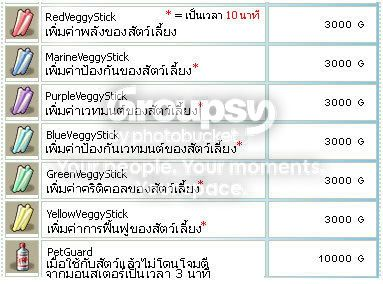

กาลังช่วยเก็บส่ง งิ เนื่องด้วยไม่ใช้ซาลาเปาแล้ว เดวนี้พกแพทย์สนามอย่างเดียว ^_^
แป่วววว มิได้เก็บแถวนั้นอะสิ ลงดันตลอด =w=''
ถ้าไปเล่นๆจะเก็บละกันเน่อ~(ปกติโยนทิ้งพื้น!!)
http://eco.froztic.in.th/archive/ecofanclub/
http://eco.froztic.in.th/archive/ecofanclub/viewtopic.php?f=25&t=33805
-คนหน้าตาดี- เขียน:งืมๆ คงต้องหารางวัลมาล่อหน้าใหม่กันล่ะอิอิ
150 แลก MagicCrystal
200 แลก PowerCrystal
250 แลก CriticalCrystal
450 แลก MagicCrystal , PowerCrystal , CriticalCrystal
1ล้าน แลก เบอร์มือถือ Gm เป็ปเป้ <<<<อันนี้ล้อเล่นอย่างคิดมากๆๆๆๆ
ไอเดียจาก คุณ bigkks101
ลิลลี่จัง เขียน:-คนหน้าตาดี- เขียน:งืมๆ คงต้องหารางวัลมาล่อหน้าใหม่กันล่ะอิอิ
150 แลก MagicCrystal
200 แลก PowerCrystal
250 แลก CriticalCrystal
450 แลก MagicCrystal , PowerCrystal , CriticalCrystal
1ล้าน แลก เบอร์มือถือ Gm เป็ปเป้ <<<<อันนี้ล้อเล่นอย่างคิดมากๆๆๆๆ
ไอเดียจาก คุณ bigkks101
อยากครบเร็ว สัก 99k แลกบูสสิ :lol:
-คนหน้าตาดี- เขียน:ลิลลี่จัง เขียน:-คนหน้าตาดี- เขียน:งืมๆ คงต้องหารางวัลมาล่อหน้าใหม่กันล่ะอิอิ
150 แลก MagicCrystal
200 แลก PowerCrystal
250 แลก CriticalCrystal
450 แลก MagicCrystal , PowerCrystal , CriticalCrystal
1ล้าน แลก เบอร์มือถือ Gm เป็ปเป้ <<<<อันนี้ล้อเล่นอย่างคิดมากๆๆๆๆ
ไอเดียจาก คุณ bigkks101
อยากครบเร็ว สัก 99k แลกบูสสิ :lol:
เอาบูสของลี่ไปเป็นของรางวัลสิ


crystalcross เขียน:ซื้อหมด 1ตัวเตมทุค่า(ไม่นับhp) น่าจะล้านเศษๆ (ไม่ล้ม)
*0* ดีจัง อิอิ
KirA.K เขียน:นี่ข้อมูลของสติ๊กแต่ละสีนะคะ แปลมาให้แล้ว
ตีไปหย่อนเหมือนกันแต่ได้ทีละนิด ๆ มันหนัก -w-"
สู้ ๆ KeetinRanger!! ,,>_<,,
-Edit-
อ้อ แก้ไขเพิ่มนิด พอไปอ่านดูดี ๆอีกที ดูเหมือนมันจะไม่ได้เพิ่มตลอดนะคะ เหมือนจะเพิ่มแค่ช่วงเวลาหนึ่ง คือ 10 นาที ^^"
Pet guard นั่นมีค่าความทนทานด้วยมั้งคะ ^^" รู้สึกสึกว่าใช้ได้ 30 ครั้งนะ ก็คุ้มกะ 10k หน่อยมั้ง ^^"
ปล. ใครจะรับเป็นหน้าม้า ซื้อใบเปิดคลัง(Cash) เพื่อส่ง Keetin หลักแสนๆ ชิ้นเข้า NPC ละ ?
ถ้าจะให้วิ่งรอกขน Keetin รอบละ 400 อันจากโกดัง Easter Cape >>> บ้านหมาน้อย ... หึๆๆ